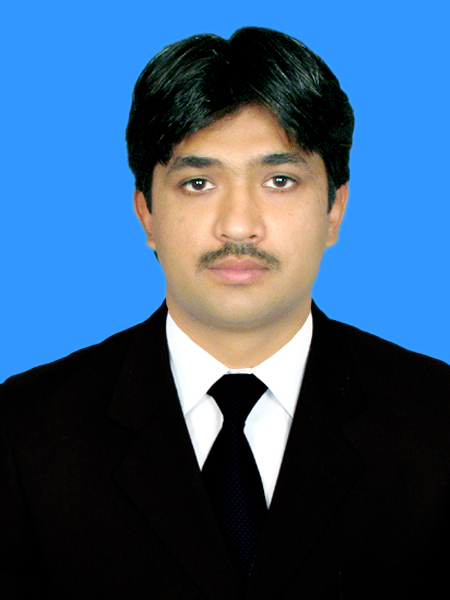

Tariq Farooq

Personal Statement
I am hardworking and experienced individual with experience in software development, application security testing and IT Audit & Compliance.
Education
- MS
- Information Security, MCS-NUST (2012-2015)
- MSc
- Computer Science, FUUAST-ISB (2008-2010)
Certifications
- CISSP
- CISA
- Certification No: 18150792
- ISMS (LA)
- Certification No: 44370022/138322695
Work Experience
-
Manager (IS) - Public Sector Organization, ISB
Dec, 2019 to Present
- Development and Implementation of IS/IT Policies
- Ensuring System Hardening
- Ensuring IT Audit Compliance
Skills
- IT Audit & Compliance
- Full Stack Development
- Application Security Testing
Honors & Awards
- Gold Medalist in M.Sc Computer Science (Networks)
- Vice President ISACA at Military College of Signals (NUST)
Academic Project
- Society Security System over Telephone Lines during M.Sc Computer Science (Networks)
Publication
-
Application of Formal Methods for validation and verification of embedded
system communication protocol (IEEE-IBCAST-2016).